A warning-centre report on the 1 January 2024 Mw 7.5 Noto Peninsula earthquake, built from raw seismograms
Overview · in simple terms
When a fault slips, it sends out two kinds of wave. The P-wave is faster and arrives first; the S-wave is slower and arrives later. The further away you are, the bigger the gap between them, so each station's gap tells you its distance to the earthquake. Draw a circle of that size around every station and the earthquake sits where the circles meet. The same gaps also give the start time, and the direction of the very first shake shows which way the fault moved. That last part decides whether the sea floor was lifted, and so whether to warn of a tsunami.
Jishin (地震): ‘earth-shaking’, the Japanese word for an earthquake, written with the characters for ground and to quake.
At 16:10 local time on New Year's Day 2024, a fault beneath the tip of the Noto Peninsula slipped, shaking the coast at intensity Shindo 7 and sending a tsunami into the Sea of Japan. Nine seismometers between 130 km and 5,600 km away recorded it. This site follows the steps of a warning-centre practical: pick the waves, find the distance, triangulate the epicenter, find the origin time, read the fault motion and decide on a tsunami warning. It then does what the practical could not, and checks every answer against the official solution.
When did each wave arrive?
Sheet 2 · in simple terms
Each station records the ground moving up–down (Z), north–south (N) and east–west (E). The P-wave arrives first and pushes the ground along its path, so it shows up best on Z. The S-wave arrives later and shakes the ground side to side, across its path. Turning N and E into the "across the path" direction (T) hides most of the P-wave's leftover shaking, so the S-wave's start is easier to see. The two lines on each record mark those start times.
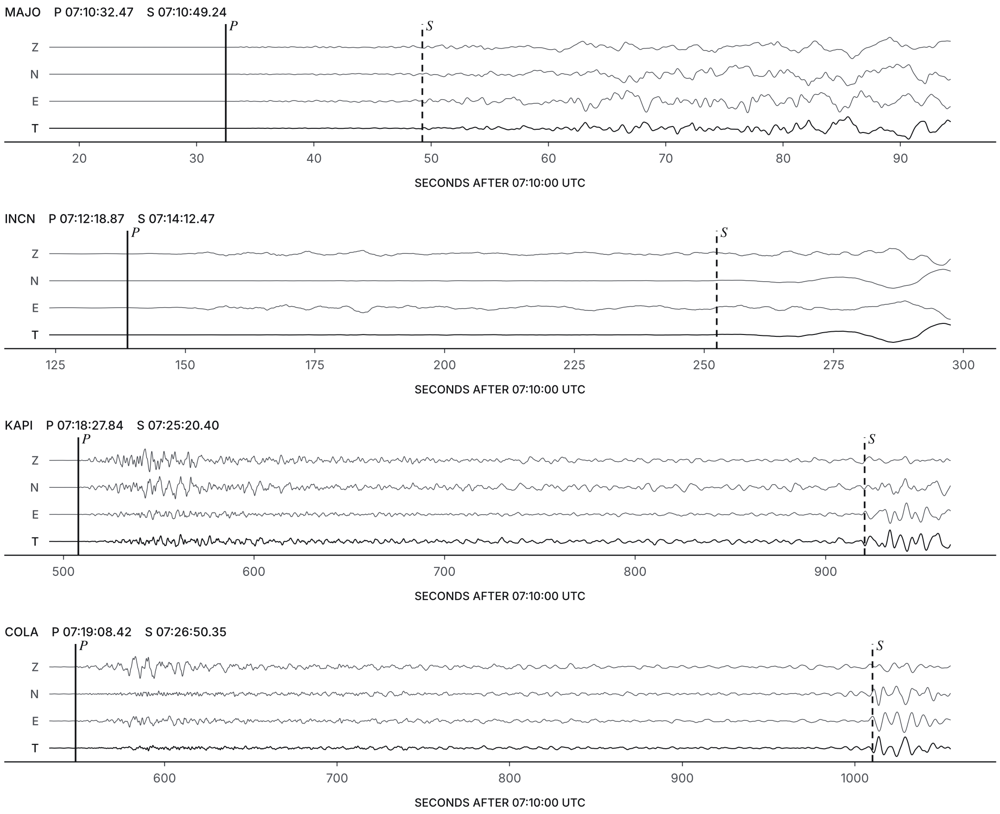
Figure IZ, N, E and the rotated transverse (T) component for MAJO, INCN, KAPI and COLA. Solid line: P pick. Dashed line: S pick. All nine stations
Method. The dataset comprised three-component waveforms (Z, N, E) for nine seismic stations. For increased accuracy, the vertical (Z) component was used to identify the P-wave arrivals, due to their strong particle motion. For the S-waves, the north (N) and east (E) components were not enough, so I rotated them into the transverse (T) component, perpendicular to the path from the earthquake, where the P coda is weakest and the S onset stands out. The direction for that rotation came from each station's own P-wave motion, not from the official location.
Uncertainty. The S-wave arrivals have a larger uncertainty than the P-wave arrivals. This is due to the fact that the P-wave is the first signal to arrive, making its onset large and, thus, very distinguishable from the silence before it. The S-wave arrives after the ground is already shaking from the P-wave coda, obscuring the precise inflection point, as the arrival is masked by the background interference. Here the ground was already shaking before the mainshock, from a M5.5 foreshock four minutes earlier, so every S pick carries its own uncertainty.
| # | Station | Net | Lat | Lon | P arrival (UTC) | S arrival (UTC) | S ± | Note |
|---|---|---|---|---|---|---|---|---|
| 1 | MAJO | IU | 36.546 | 138.204 | 07:10:32.47 | 07:10:49.24 | 1 s | sharp P and S |
| 2 | ERM | II | 42.015 | 143.157 | 07:11:47.92 | 07:13:25.57 | 8 s | S emergent in P coda |
| 3 | INCN | IU | 37.478 | 126.624 | 07:12:18.87 | 07:14:12.47 | 8 s | S emergent in P coda |
| 4 | YSS | IU | 46.959 | 142.760 | 07:12:41.60 | 07:15:23.25 | 15 s | S ambiguous - lowest confidence |
| 5 | TATO | IU | 24.974 | 121.497 | 07:14:32.32 | 07:18:20.17 | 8 s | S emergent |
| 6 | GUMO | IU | 13.589 | 144.868 | 07:15:33.27 | 07:20:20.37 | 6 s | S clear at long period |
| 7 | KMI | IC | 25.148 | 102.747 | 07:16:34.37 | 07:22:16.87 | 8 s | S emergent |
| 8 | KAPI | II | -5.014 | 119.752 | 07:18:27.84 | 07:25:20.40 | 3 s | S clear on transverse |
| 9 | COLA | IU | 64.874 | -147.862 | 07:19:08.42 | 07:26:50.35 | 3 s | S clear on transverse |
Table I · P and S arrival picks for each of the nine stations, networks IU, II and IC. Several sensors (KAPI, COLA, GUMO, TATO) sit at an angle to true north; their horizontals were rotated using each sensor's published azimuth before picking.
How far away was it?
Sheet 3 · in simple terms
Think of two runners leaving the same start line, one faster than the other. The further the finish line, the bigger the gap between them when they cross it. The P and S waves are those runners. There are two ways to turn the gap into a distance: assume both waves run at a constant speed in a straight line, or read it off curves calculated for the real Earth, where waves speed up with depth and bend. Slide the lag to see the two answers drift apart with distance.
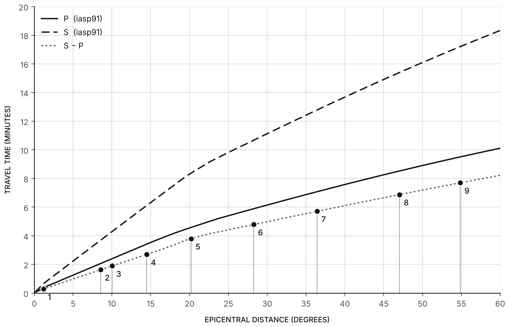
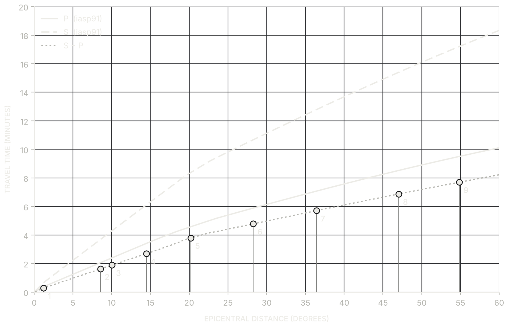
Figure IIEpicentral distance vs travel time (iasp91). Each station sits on the S − P curve at its measured lag; reading straight down gives its distance. Numbers match Table I.
Two methods. After identifying the P and S arrival times for all nine stations, I calculated the radial distances using the travel-time graph, with standard curves from the iasp91 Earth model, and the constant velocity method, assuming constant velocities of 8 km/s and 4.3 km/s for the P and S waves respectively.
VP = 8 km/s and VS = 4.3 km/s, the same constants as the practical. The calculation method assumes a homogeneous crust, where the velocity is constant and the waves travel in straight lines.
| Station | tP (s) | tS (s) | S − P (s) | Constant velocity (km) | Travel-time graph (km) | Graph (°) |
|---|---|---|---|---|---|---|
| MAJO | 32.47 | 49.24 | 16.77 | 156 | 134 | 1.21° |
| ERM | 107.92 | 205.57 | 97.65 | 908 | 951 | 8.55° |
| INCN | 138.87 | 252.47 | 113.60 | 1,056 | 1,114 | 10.02° |
| YSS | 161.60 | 323.25 | 161.65 | 1,503 | 1,609 | 14.47° |
| TATO | 272.32 | 500.17 | 227.85 | 2,118 | 2,249 | 20.22° |
| GUMO | 333.27 | 620.37 | 287.10 | 2,669 | 3,144 | 28.27° |
| KMI | 394.37 | 736.87 | 342.50 | 3,184 | 4,051 | 36.43° |
| KAPI | 507.84 | 920.40 | 412.56 | 3,836 | 5,231 | 47.04° |
| COLA | 548.42 | 1010.35 | 461.93 | 4,295 | 6,099 | 54.85° |
Why UTC. The UTC time was assumed as it is the global standard for seismology (USGS, 2023), and it seemed the most rational with the stations spanning different time zones (MAJO, UTC+9; KMI, UTC+8; KAPI, UTC+8; COLA, UTC−9). Times in Table II are seconds after 07:10:00.00 (UTC).
Which method. The graph method was used to find the true epicenter. The calculation method assumes the waves travel in a straight line through a uniform medium, which for Earth is an oversimplification. The graph uses curves derived from established Earth models that account for waves travelling through layers of varying pressure and density, causing refraction and acceleration. At MAJO the two differ by about 20 km; at COLA, by more than 1,800 km.
Where do the circles meet?
Sheet 4 · in simple terms
Each station only knows how far away the earthquake was, not in which direction, so its answer is a circle. Two circles cross at two points; a third picks one of them. With nine, the circles should all pass through one spot. Here they don't quite: most are a little too big, for a reason sheet 09 explains. The cross marks the point that sits closest to all of them at once.
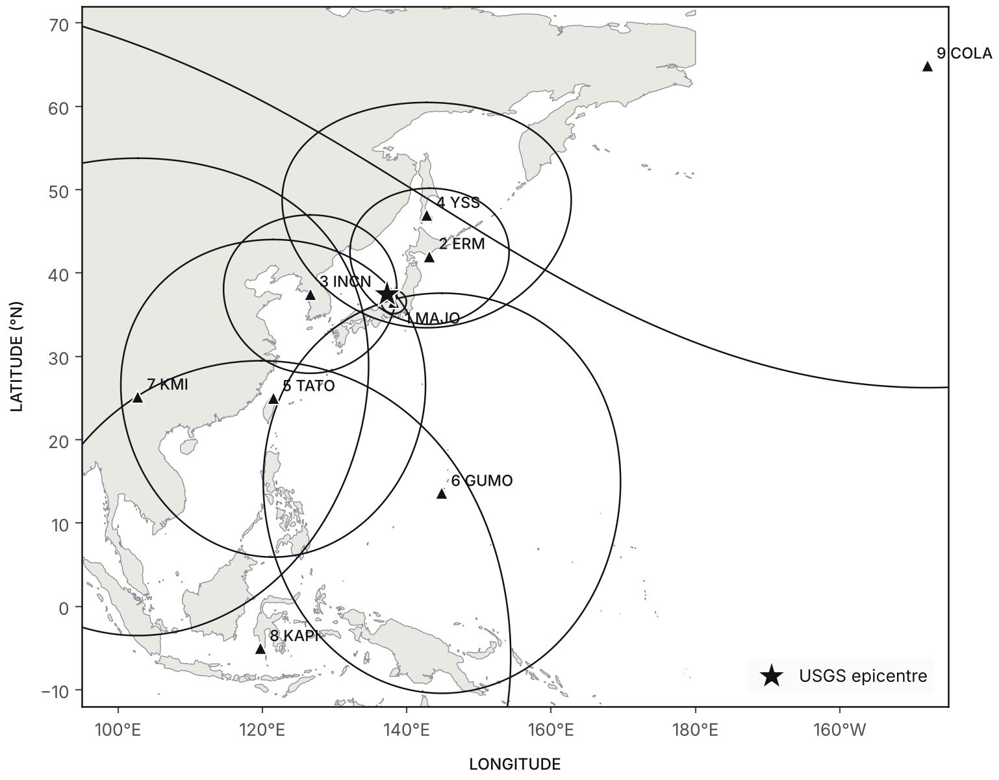
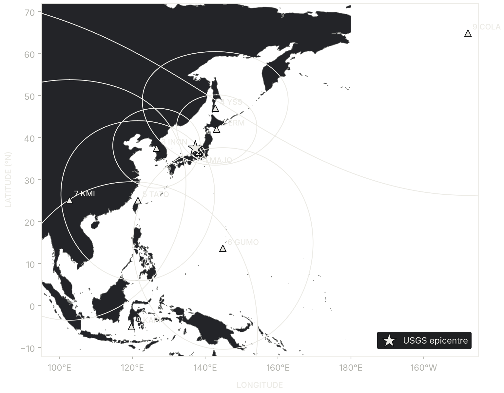
Figure IIIaTriangulation with the constant-velocity distances.
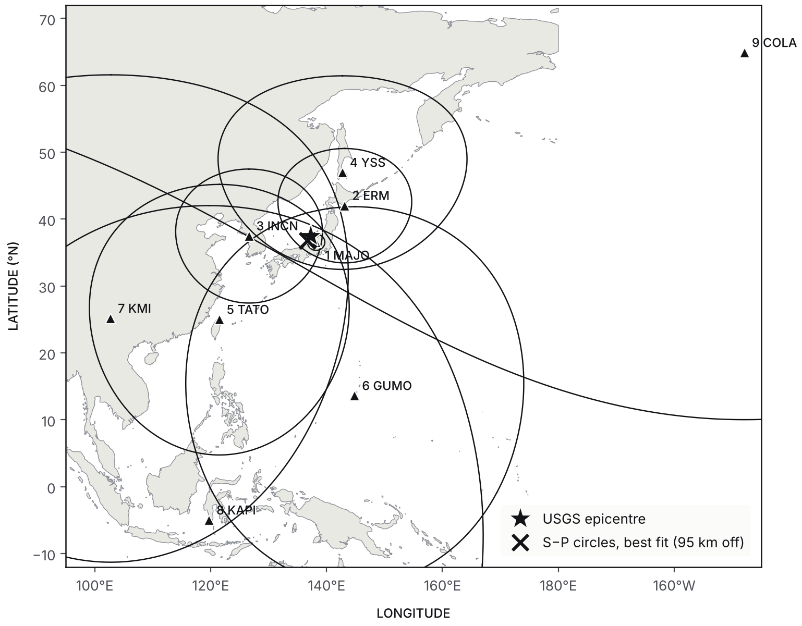
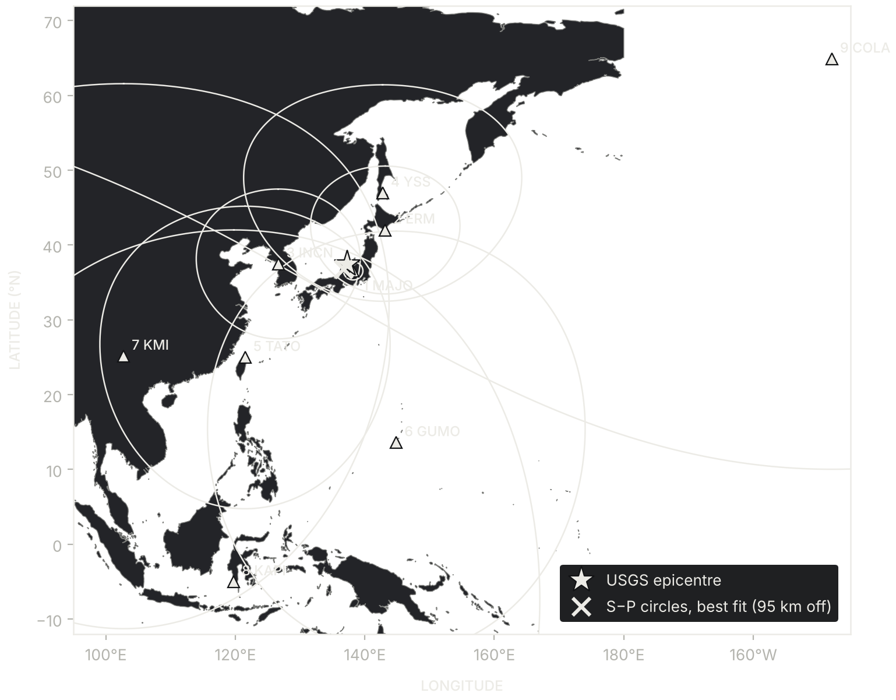
Figure IIIbTriangulation with the travel-time-graph distances, used for the epicenter.
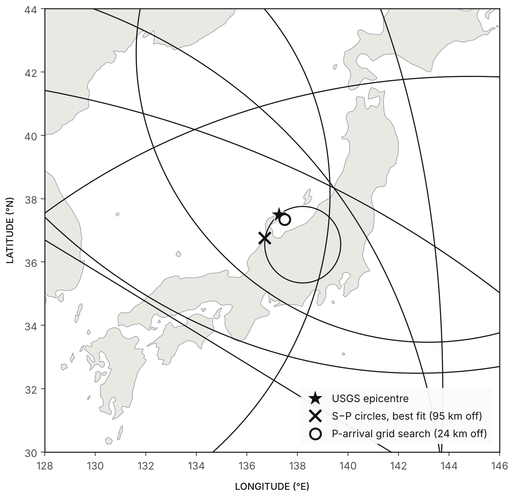
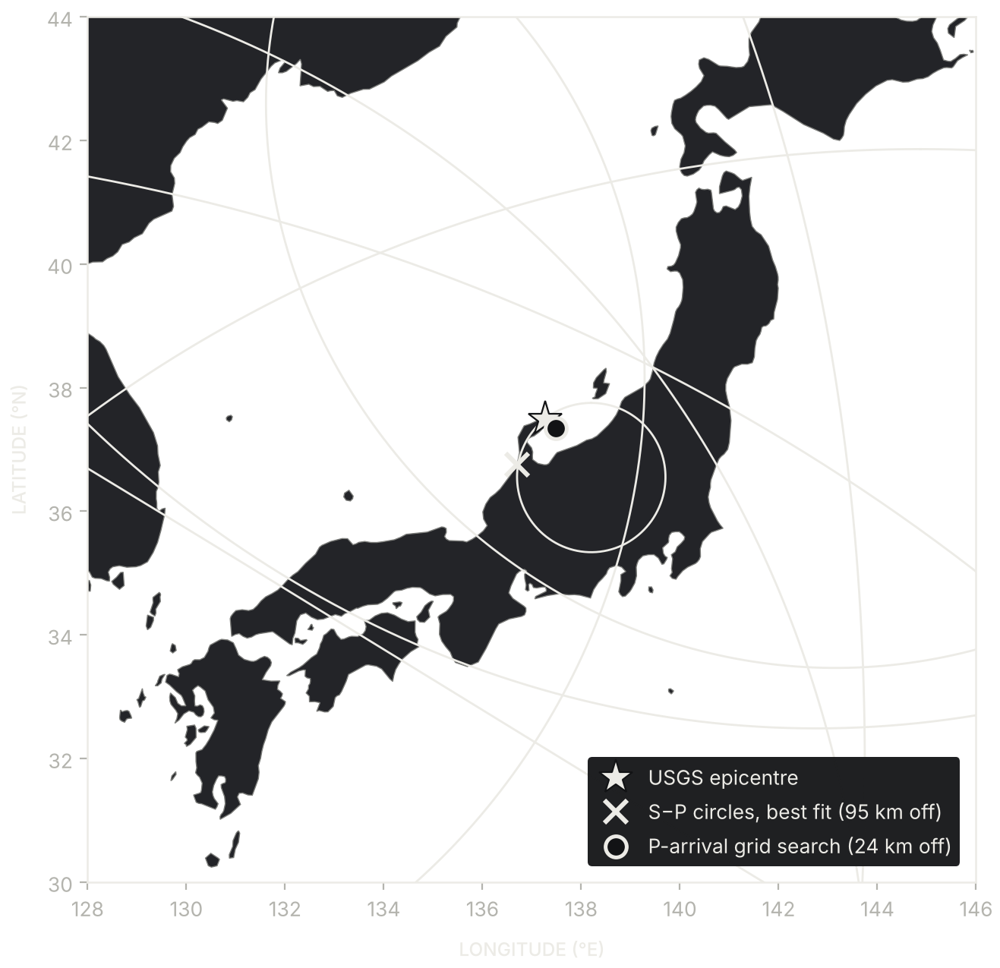
Figure IIIcZoom on central Japan. Star: USGS epicenter. Cross: best fit to the nine S − P circles. Ring: the P-arrival grid search of sheet 08.
The ‘true epicenter’ was picked as the point closest to all nine circles, with the less certain S picks given less weight. The nearest station, MAJO, is the strongest constraint: its circle is only 134 km across, and its distance came out within a few kilometers of the true value.
However, there is an uncertainty in the location from the selection of the S waves, as mere seconds can increase the radial error by tens of kilometers. Most of the circles here are systematically too large.
Try it. Open the Google Earth file in Google Earth Pro (File → Open), place your own pin where the circles meet, then switch on the hidden answer key folder.
When did the rupture begin?
Sheet 5 · in simple terms
The gap between the two waves grows steadily the later the first wave arrives. Plot one against the other and the points fall on a straight line. Follow the line back to where the gap is zero: that is the moment the two waves were together, at the source. That moment is the start of the earthquake.
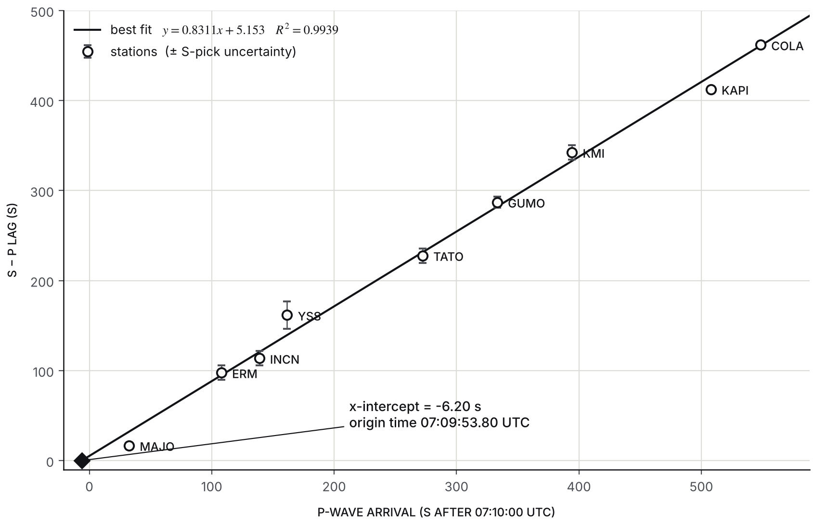
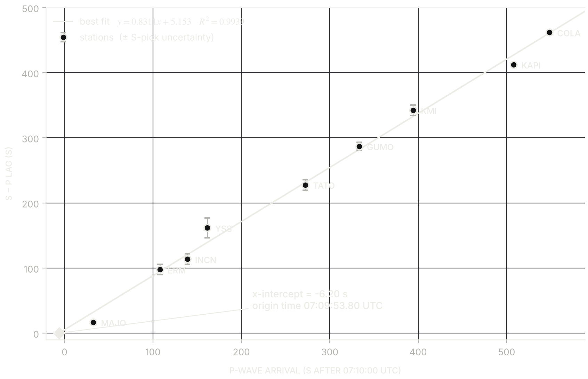
Figure IVWadati plot: S − P lag against P arrival, with each S pick's uncertainty and the line of best fit used to calculate the origin time.
To calculate the origin time, a Wadati plot had to be produced comparing the lag time, the difference between the S and P arrivals, with the P arrival time, and plotting a line of best fit to see at what time the S − P difference would be zero, as it would only be that at the epicenter. From Figure IV, that time is -6.20 seconds (the x-intercept) from the reference time of 07:10:00.00 (UTC), giving an origin time of 07:09:53.80 (UTC).
The Wadati plot also has a high R² value (0.9939), close to one. A high R² alone does not make the answer right, though: the official origin time is 07:10:09, 15.2 s later. A tight fit can still be shifted if every S pick is late by a similar amount.
The slope of the line is VP/VS − 1 (0.8311 here, so VP/VS ≈ 1.83, close to the 1.73–1.8 typical of the crust and mantle). Where the line crosses zero, tP = t0, the origin time.
Which way did the fault move?
Sheet 6 · in simple terms
When a fault slips, the ground is pushed towards some stations and pulled away from others. A "beach ball" maps that pattern: dark where the first shake was a push, light where it was a pull. A dark band across the middle means one block was shoved up over the other, a reverse fault. Several of the nine stations recorded a clean first shake, and every one of them falls on the side of the ball this fault predicts.
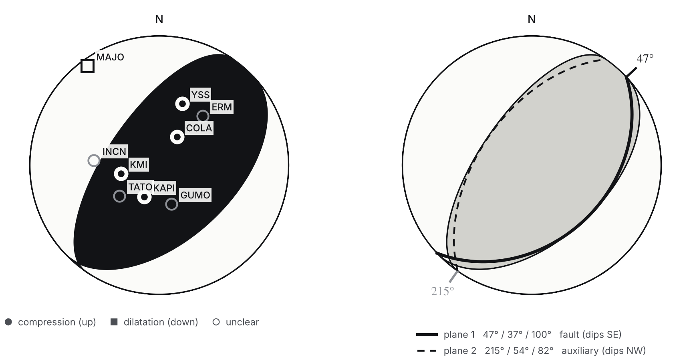
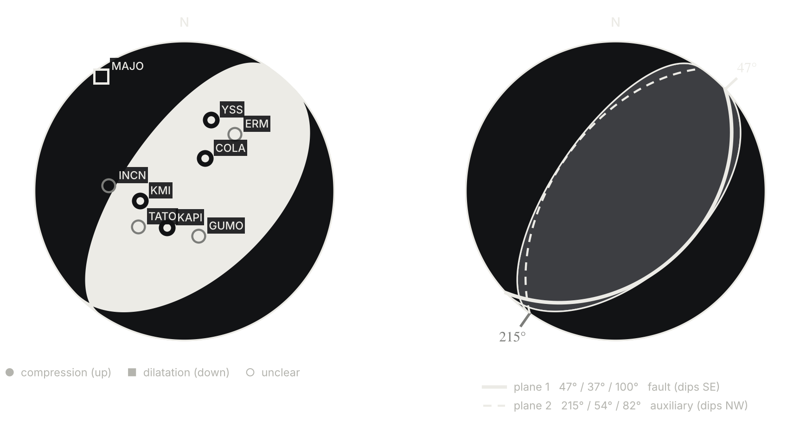
Figure VLeft: JMA focal mechanism, lower hemisphere, with P-wave first motions from Figure I's stations. Right: the two nodal planes; solid is the true fault plane.
Reading it. The JMA solution has nodal planes of strike 47°, dip 37°, rake 100° and strike 215°, dip 54°, rake 82° (Fujii & Satake, 2024). Firstly, the strike of the two planes is read where the dividing lines meet the rim: 47° and 215°. Secondly, from the shaded and unshaded distribution: instead of four quadrants, the shaded region is a single band across the centre, so the motion is predominantly dip-slip. Thirdly, the centre is shaded, the compressional quadrant, which is indicative of a reverse (thrust) fault, with rakes close to 90°.
Tested. Five stations had a clear first motion: four up (compression), MAJO down (dilatation). All five fall where the mechanism predicts. The other four were too contaminated by the foreshock to call, and are shown hollow rather than guessed.
Which plane. I researched which faults are found near the epicenter to determine which plane was the true fault plane and which was auxiliary. Offshore of the Noto Peninsula, several active reverse faults dipping southeast with NE–SW strikes are mapped. The Earthquake Research Committee concluded the source was a reverse fault mainly dipping southeast, extending roughly 150 km NE–SW, with slip spreading bilaterally (ERC, 2024).
The 47° plane dips 37° to the southeast, confirming that the true fault plane is most likely the 47° strike plane: a thrust in which the peninsula side rode up and over the seafloor to its northwest.
Does this lift the sea?
Sheet 7 · in simple terms
A tsunami starts when the seafloor suddenly moves up or down and drags the whole column of water above it along. A fault that slides sideways barely moves the water. A reverse fault like this one pushes the seafloor up. Here it happened right under the coast, so the waves could arrive within a minute or two, before any warning could get out.
The decision. Based on the focal mechanism of the rupture, a reverse fault with nearly pure dip-slip motion, the dominant motion is vertical. Vertical seafloor displacement provides a direct source for tectonic tsunami generation, as it disturbs the overlying water column, producing outward-propagating waves. Unlike an oblique strike-slip rupture, where much of the motion is sideways and the tsunami case leans on secondary submarine landslides, the tectonic case here is direct. The strong shaking also weakens slopes and causes liquefaction, structural damage and landslides along the coast, contributing to the hazardous environment.
With the towns of Suzu, Wajima and Noto essentially above the rupture, in the extreme near field, a warning should be issued immediately on the mechanism and location alone. To reduce the risk of a false alarm, I would like high-resolution bathymetry, information regarding the tide and sea level, data on vertical crustal deformation from GNSS, and real-time tide gauges to track any anomalous waves.
What actually happened. JMA issued tsunami warnings about two minutes after the earthquake and upgraded the Noto warning to a major tsunami warning roughly ten minutes later, the first since 2011. Modelling suggests the first waves reached Suzu, Wajima, Noto and Nanao within 1–2 minutes, before the warning was out (nippon.com, 2024).
Field surveys found tsunami flood heights of over 4 m in Noto Town and Suzu, and run-up over 5 m in Joetsu, Niigata (ERC, 2024), while the peninsula itself rose by up to about 5 m on its west coast (Ma et al., 2024). The decision above matches the real one. The timing it reveals, a near-field tsunami outrunning its own warning, is why "evacuate when the shaking stops" matters as much as the warning.
How close did it get?
Sheet 8 · in simple terms
The P-wave times are sharp; the S-wave times are fuzzy. So, instead of using the gap between them, test thousands of possible locations on a grid: for each one, predict when the P-wave should have reached every station and measure how far off the predictions are. The location with the smallest error wins. Using only the reliable measurements cuts the error by three-quarters.
| Quantity | This study | USGS | Error |
|---|---|---|---|
| Epicenter · S − P circles | 36°45′36.0″N, 136°42′00.0″E | 37°29′13″N, 137°16′16″E | 95 km |
| Epicenter · P-arrival grid search | 37°21′00.0″N, 137°29′06.0″E | 37°29′13″N, 137°16′16″E | 24 km |
| Origin time · Wadati plot | 07:09:53.80 | 07:10:09 | 15.2 s early |
| Origin time · P-arrival grid search | 07:10:12.60 | 07:10:09 | 3.6 s late |
| Fault | Reverse, 47° plane dipping SE | Reverse, NE–SW strike | consistent |
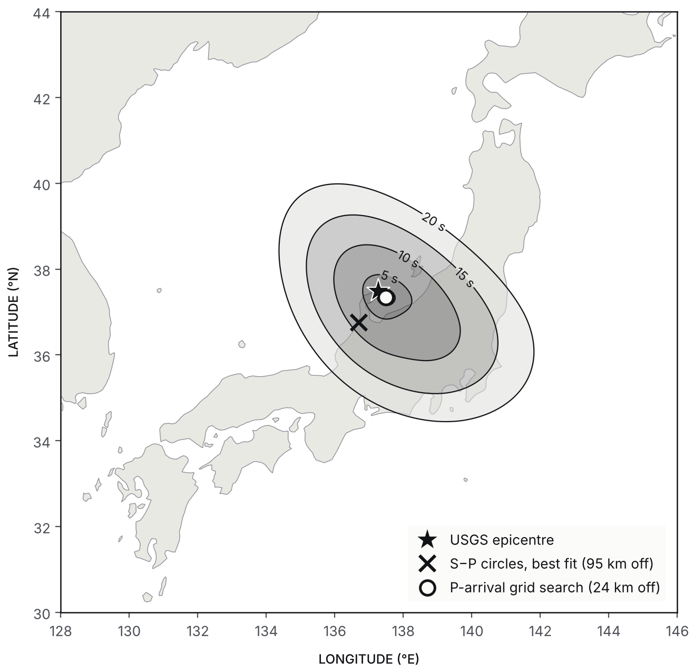
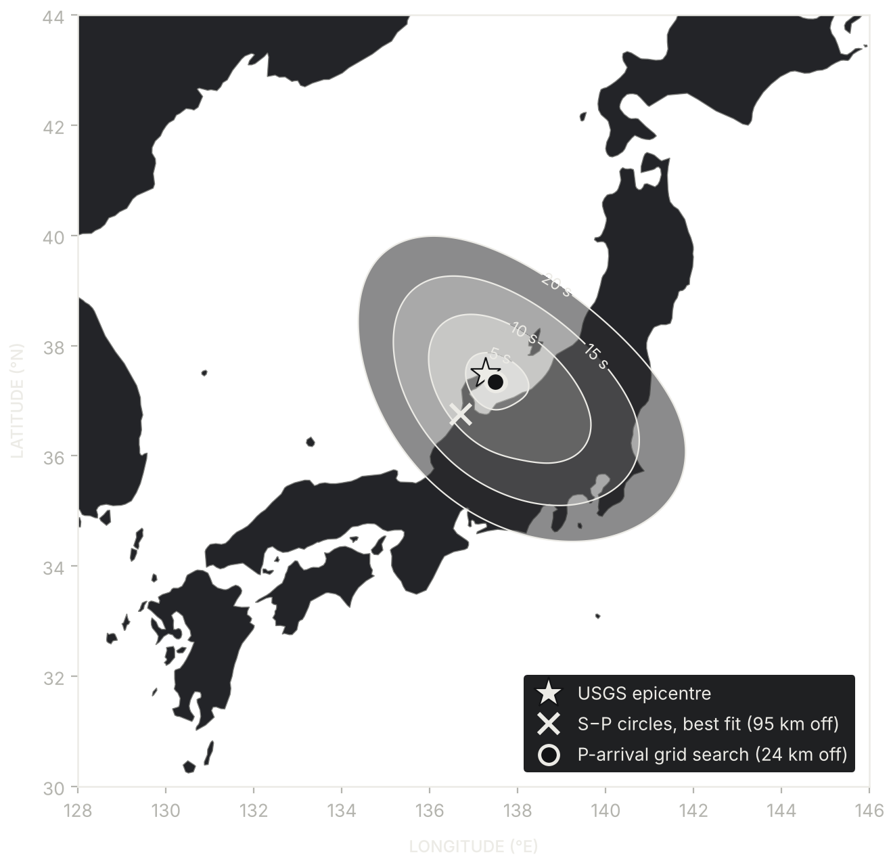
Figure VIRMS misfit between predicted and observed P arrivals across the region; darker is a better fit. The 5-second contour encloses the USGS epicenter.
The improvement. The P picks are sharp, to well under a second; the S picks are the weak link. So, instead of drawing S − P circles, I searched a grid of candidate epicenters. For each point I predicted when the P-wave should reach each station, solved for the origin time that fits best, and measured how badly the predictions missed the picks. This is the same logic agencies use, with nine stations instead of thousands.
The best point lands 24 km from the USGS epicenter, with an origin time within 3.6 s and an average misfit of 2.45 s per station.
| Station | Graph distance (km) | True distance (km) | Difference | S − P excess | P residual |
|---|---|---|---|---|---|
| MAJO | 134 | 134 | +1 km | +3.0 s | +0.86 s |
| ERM | 951 | 712 | +239 km | +23.6 s | +1.21 s |
| INCN | 1,114 | 939 | +175 km | +15.2 s | +1.46 s |
| YSS | 1,609 | 1,145 | +464 km | +44.2 s | +0.27 s |
| TATO | 2,249 | 2,040 | +209 km | +21.3 s | +4.60 s |
| GUMO | 3,144 | 2,762 | +382 km | +24.5 s | -0.10 s |
| KMI | 4,051 | 3,530 | +521 km | +30.8 s | -3.53 s |
| KAPI | 5,231 | 5,062 | +168 km | +10.2 s | -3.91 s |
| COLA | 6,099 | 5,592 | +507 km | +28.4 s | -0.85 s |
Table III · Each station against the official epicenter. S − P excess: the measured lag minus the lag iasp91 predicts at that station's true distance.
Why were the S-waves late?
Sheet 9 · in simple terms
This earthquake started quietly. For its first 15–20 seconds the fault crept slowly before the big slip took off. The first P-wave is so clean that even that quiet start shows up. The first S-wave from the quiet start, though, was lost in the shaking already going on, so the S-wave seen at each station came from the big slip, about 20 seconds later. Every gap was therefore too long by about the same amount, which made every circle too big.
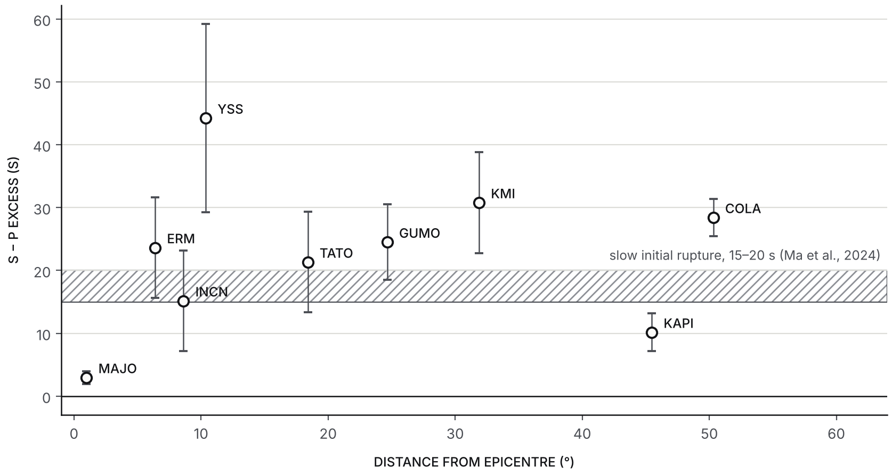
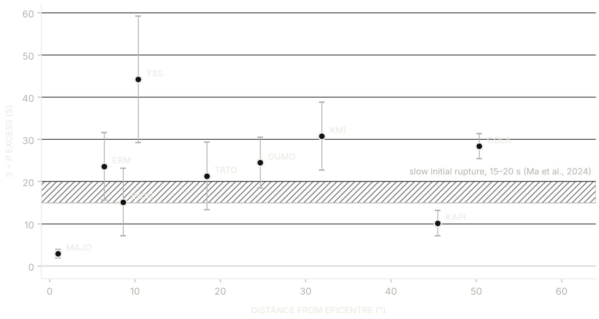
Figure VIIHow much longer each measured S − P lag is than the iasp91 prediction at that station's distance. Hatched band: the published slow initial rupture. YSS is the least reliable pick.
The pattern. Apart from MAJO, the S picks are consistently late, by a median of about 24 s. That is too consistent to be bad picking. It matches what was later published: the Noto rupture began with a slow initial phase lasting 15–20 seconds before the main slip took off (Ma et al., 2024), with another study describing about 25 seconds (Peng et al., 2024).
Why. The P onset is the very first motion, so even the weak start shows above the quiet background. The S onset arrives into ground already shaking, so the weak S is invisible and the first S that can be seen comes from the main rupture. Every S − P lag grows by about the same amount, which enlarges every circle and pulls the Wadati intercept earlier while barely touching R². At MAJO, 1.2° away, the weak S had not yet been drowned out.
pip install -r python/requirements.txt python python/run_all.py python python/build_site.py % MATLAB, from matlab/ run_all
Change a pick in data/picks.csv (or matlab/noto_picks.csv) and rerun; every table, figure and map updates. Code: github.com/gergomesz/noto-2024-earthquake.
Earthquake Research Committee (2024). Evaluation of the 2024 Noto Peninsula Earthquakes, 9 Feb 2024. jishin.go.jp
Fujii, Y., Satake, K. (2024). Slip distribution of the 2024 Noto Peninsula earthquake (MJMA 7.6) estimated from tsunami waveforms and GNSS data. Earth, Planets and Space. doi:10.1186/s40623-024-01991-z
Ma, Z., Zeng, H., Luo, H., et al. (2024). Slow rupture in a fluid-rich fault zone initiated the 2024 Mw 7.5 Noto earthquake. Science 385, 866–871. doi:10.1126/science.ado5143
Peng, Z., Lei, X., Wang, Q.-Y., et al. (2024). Earthquake Research Advances. doi:10.1016/j.eqrea.2024.100332
nippon.com (2024). Lessons from the Noto Peninsula earthquake and tsunami. nippon.com · USGS (2024). Event us6000m0xl. earthquake.usgs.gov · USGS (2023). Why earthquakes are reported in UTC. usgs.gov
Kennett, B.L.N., Engdahl, E.R. (1991). iasp91. GJI 105, 429–465. · Beyreuther, M., et al. (2010). ObsPy. SRL 81, 530–533. · Waveforms: IRIS/EarthScope, networks IU, II, IC. Coastlines: Natural Earth.
An independent study project, modelled on a Natural Hazards earthquake & tsunami practical and rebuilt from real data.